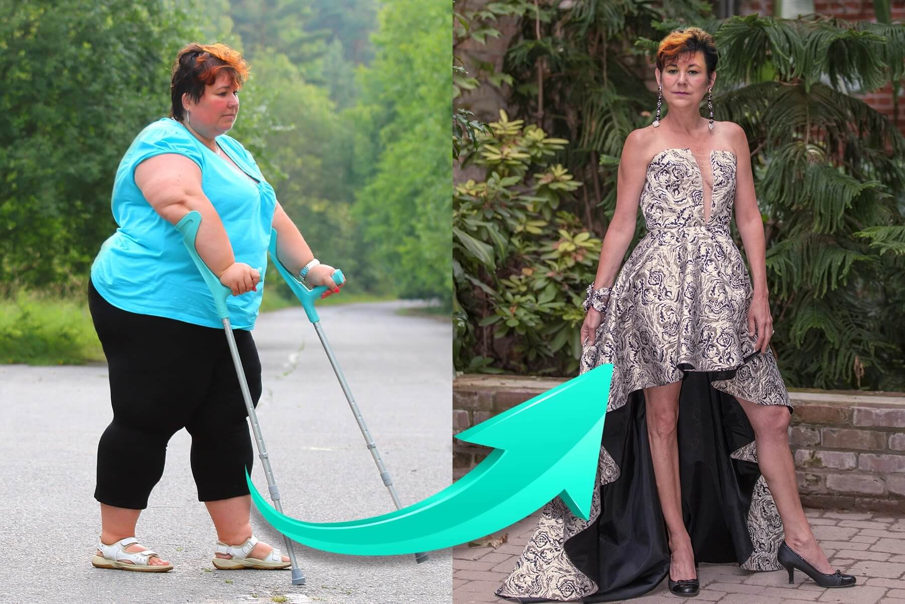
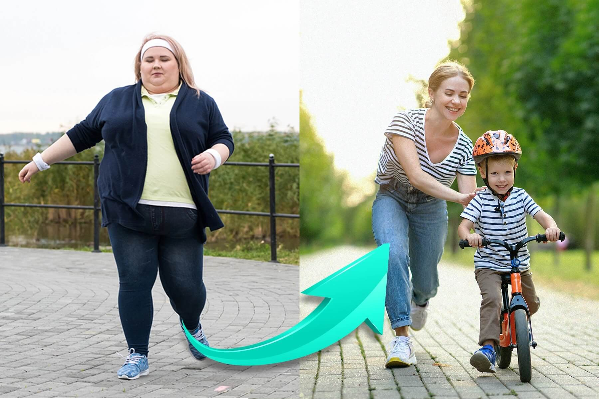
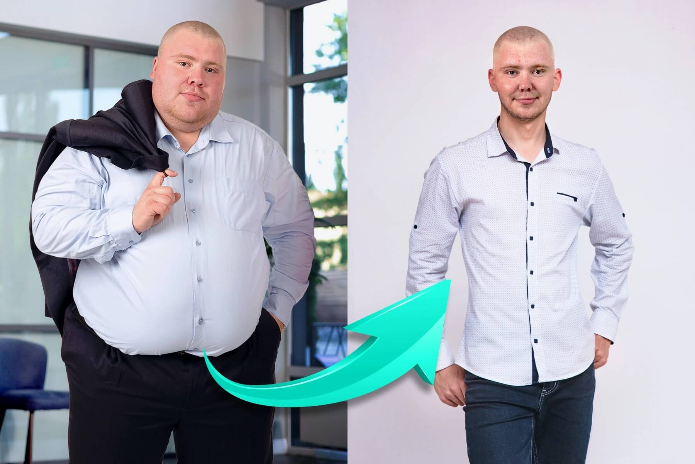
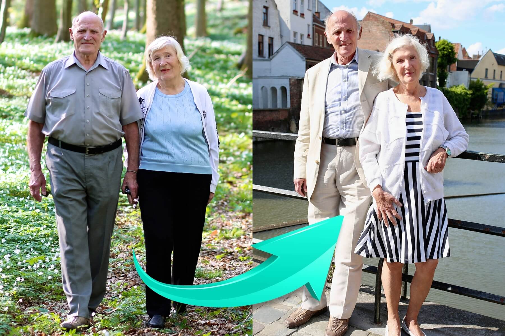
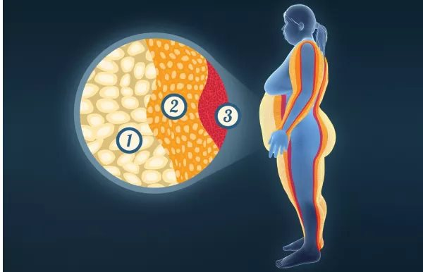
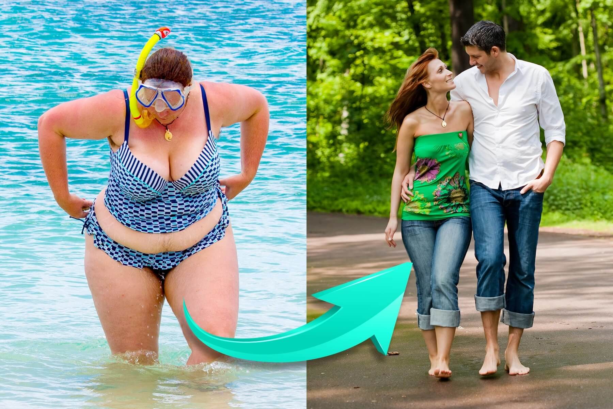
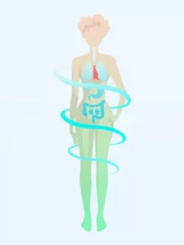
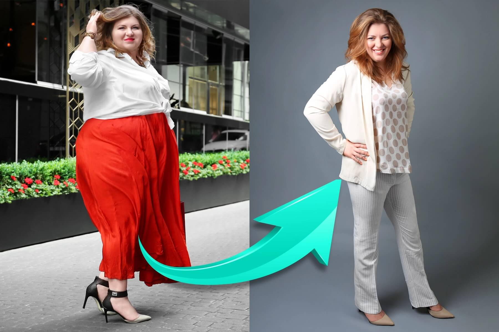
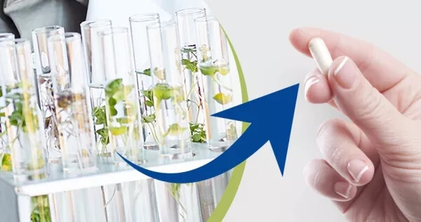
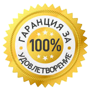

Отслабнете чрез изгаряне на излишните мазнини и удължете живота си!
Ефект на автоматично отслабване с 10 кг за 2 седмици
Здравейте, ние сме Анна Илиева (България), Диего Хосе Гутиерес (Аржентина) и Кейчиро Санака (Япония).
Световно известние учени ни наричат "млади герои, измислили
антидот срещу наднорменото тегло". Това е много приятно за нас. Но повече от радостта ни радва
това,
че благодарение на нас можете да свалите излишните мазнини. И така да бъдете здрави и щастливи.
Нашият "антидот срещу наднормено тегло" помага за отслабване с 10 кг за 2 седмици.
Най-важното: отслабвате, без да променяте начина си на хранене и без упражнения. По този начин ще
свалите до 10, 30, 50 и повече килограма. Да, като Кристина от Белмекен, благодарение на нашия метод
свали... 100 кг!

Се сдобих с нов живот
Бях толкова дебела, че дори не излизах от къщи, защото се срамувах. Децата на двора, когато ме
виждаха, ме наричаха
"слоница". А майките им дори не им правеха забележка, само ме гледаха с отвращение. Страхувах
се, че ще умра сама
и ще създам проблеми на децата, защото ще трябва да извадят мъртвото ми тяло през прозореца с
кран. С тази мисъл заспивах всяка вечер...
И днес ли?
Тежа 71 кг. Щастлива съм, както никога досега. И най-важното: съм
здрава! Вече не си седя вкъщи. Прекарвам време със семейството и приятелите си. И
най-забавното е, че бившият ми съпруг постоянно ми се обажда. Иска да се съберем. Не знам дали
да се съгася, защото ходя на
срещи с по-млади и по-красиви мъже. Просто е чудесно…
Кристина Бенкова, на 55 години, Белмекен
За 5 месеца тя отслабна със 102 кг!
❮
❯
Днес Вие също можете ефективно да свалите 10, 30, 50 и повече килограма и по този начин да си осигурите
здравословен и щастлив живот
Няма значение дали сте жена или мъж. Няма значение на колко години сте. Няма значение дали сте с
наднормено тегло от дете или от няколко месеца. Няма значение каква е причината – дали е слабост към
сладките изделия, заседнала
работа, бременност, хормонални проблеми, менопауза, приемани препарати и т.н...
Важно е само да искате да отслабнете. Само това има значение. Да сте сигурни,че с нашето
средство ще го постигнете
бързо, лесно и безопасно. Независимо от всичко.
• Ако сега тежите 100
кг...
След 4 седмици ще тежите 80 кг, а след 8 седмици - 60 кг! Можете
да отслабвате с 10 кг всяка 2 седмица. Ефектите се потвърждават без съмнение от опитите
на отслабване, проведени върху 27 хиляди мъже и жени на възраст 18-98 години.
• Ако сте загрижени за
здравето си...
...защото имате лоши нива на холестерол и захар, ставите Ви болят, нямате енергия и се
страхувате, че наднорменото тегло ще съкрати живота Ви... – само след 2 седмици ще можете да подобрите
здравето си.
Ще започнете да пращите от енергия. И след 4 седмици вече нищо няма да Ви боли. Ще престанете да се
притеснявате за
здравето и живота си, защото благодарение на стройната фигура и подобреното си
здравословно състояние вече няма да имате причини за това.
• Ако обичате добрата храна и
не можете да спазвате диета...
Изобщо не е нужно да го правите! Дори не е препоръчително. Можете да ядете каквото
пожелаете, защото приеманата храна не влияе върху ефекта за отслабване. Ще отслабнете без да
правите никакви жертви. Как? Ще разкажем по-долу.
• Ако не обичате
упражненията...
Не го правете! Сега тялото ви е обременено с излишни килограми. Започнете да спортувате, едва
когато това няма да натовари прекалено ставите и сърцето Ви. Ако искате да спортувате, направете го
след 2 или 4 седмици,
когато сте слаби. Тогава ще изпитвате повече удоволствие от упражненията.
• Ако хората се присмиват на
наднорменото Ви тегло...
Нека се присмиват. Не хабете ценното си време в притеснения за това. Щом са толкова незначителни, че Ви
съдят само по външния вид, изобщо не заслужават вниманието Ви. Вие само след няколко седмици ще имате
стройно, привлекателно и най-вече здраво тяло,
на което вички ще завиждат!
• Ако имате комплекси заради
наднорменото тегло...
...защото за Вас е все по-трудно да намерите подходящи дрехи или се страхувате, че вече не харесвате на
партньора си – просто си дайте по-малко от месец. Най-накрая ще можете да носите дрехи с няколко размера
по-малки от сегашните
и те ще Ви стоят идеално. Партньорът Ви ще спре да оглежда по-слабите жени и ще се влюби отново във Вас.
Вие ще се чувствате отлично в стройното си тяло и ще бъдете щастливи, когато се оглеждате в
огледалото.
Това е всичко...
БЕЗ ДИЕТИ И УПРАЖНЕНИЯ
БЕЗ ПИЛЕЕНЕ НА ПАРИ
БЕЗ ПРОМЯНА НА НАЧИН НА ЖИВОТ

Страхотна фигура след бременност въпреки че обичате сладкото!
Благодаря, благодаря, благодаря за този начин за отслабване! Исках задължително да отслабна
след
бременността. Аз и преди не бях много слаба, а после... Всеизвестно е, че когато едно момиче
забременее, тя не се отказва от вкусно лакомство.
Не трябва да внимавате какво, колко и по кое време ядете. "Всичко е за бебето". Много добро
оправдание. След като родих, излишните килограи станах още повече. Не можех да
ги сваля нито
с глад, нито с ежедневно тичане, нито с чайове за изгаряне на мазнини. Вече си мислех, че до
края на живота си ще се мъча с огромнотото дупе и висящия корем, докато не попаднах на статия за
този начин за отслабване
на един форум за майки. Веднага разбрах, че това е точно за мен!
Така и стана! Защото нито внимавах какво ям, нито превех упражнения, а
отслабнах с цели 45 кг!Станах в сто пъти по-енергична. Толкова бързо се справям с
домашните
задължения, че ми истава време да измина с колелото 10
км да се видя с приятелката,
да поклюкарстваме, докато мъжът ми се връща от работа. Пък когато отивам със сина си на детска
площадка, вътрешно
се радвам! Защото толкова съм слаба като преди раждането на детето, за разлика от дебелите майки
на детската площадка.
Може и да съм малко гадна, но обичам прекрасното чувство, когато ме гледат със завист.
Силвия Дамянова, на 28 години, Перник
Отслабнала с 45 кг за 8 седмици!
❮
❯
Как открихме нашия метод за автоматично отслабване?
Направихме нашето изключително откритие по време на стаж в Сингапурската научна лаборатория,
където, бяха поканени 10 гения от цял свят. Скромно признаваме, че сме
едни от тези 10 гения.
От полза ни бяха любовта ни към науката, новият подход към проблема с наднорменото тегло и голямата
упоритост. Работихме усърдно всеки ден в продължение на 17 месеца. Заради изтощението рискувахме
собственото си здраве.
Но това не е важно, защото благодарение на това направихме чудо, което науката не е успяла или не
желала да
постигне в продължение на 45 години.
Вече не можехме да гледаме как хората страдат заради наднорменото тегло
Защо решихме да измислим антидот срещу наднорменото тегло? За да прекъснем доминото на смъртта! Хората
дебелеят с изключително бързи темпове и боледуват в резултат на наднорменото тегло. И вината въобще
не е тяхна…
Вината е в замърсената среда, в която живеем. Вината е във високо преработената храна. Вината е в
хормоналните проблеми. Вината в стреса. Вината е в забързания живот. Вината е в заседналата работа.
Напълнияването е следствие
от бременност или менопауза. Има много фактори, но това сега не е важно. Важно и изключително тъжно е
как другите хора се
отнасят към хората с наднормено тегло...

За първи път в живота си съм слаб
Бях на дванадесет, когато започнах рязко да надебелявам. Винаги съм имал апетит, за радост на
баба ми, която ме
отглеждаше и хранеше с мазна храна. Но само вкъщи бях хубав, пък в училището ме наричаха
дебелак. Цял живот бях аутсайдер
заради теглото ми. Нямах кондиция. Достатъчно беше да изтичам до автобуса и започвах да се потя
обилно. Хората
не ме разбираха как аз страдам и ми се смееха. Животът ми беше непоносим.
Слава Богу, мой приятел ми препоръча това средство (баща му я използва и много я хвалеше).
Опитах и буквално отслабнах пред очите си. И досега, когато се събудя сутрин, не вярвам, че
аз съм слабият човек в
огледалото. Най-накрая събрах смелост пред момичетата. От 2 месеца излизам с Катя. Надявам
се, че от това ще излезе нещо сериозно. Но най-важното е, че когато отида при баба, не я
натъжавам като
отказвам храната й. Защото благодарение на това средство няма да надебелея!
Адриян Николов, 35 години, Видин
Отслабнал с 61 кг за 3 месеца!
❮
❯
Няма да позволим хората с наднормено тегло да бъдат наричани лакомници.
Бабата на Ани получила диабет в следствие на наднормено тегло и напуснала този свят
преждевременно...
– Дали баба ми беше мързелива? Дали ядеше прекалено много? Дали беше отблъскваща? Категорично НЕ! Тя
беше красива жена, защото имаше добро и любящо сърце. Никога не е била мързелива. Или работеше в
градината, или приготвяше
храна за цялото семейство, или благотворително се грижеше за деца с увреждания в медицинския център.
Тя беше много
активна физически! И никога не прекаляваше с яденето – казва Ани – дори се опитваше да отслабне и
ядеше само по 3 ябълки на ден! Това не подейства...
Бащата на Диего е починал от инфаркт, причинен от наднормено тегло...
– Баща ми работеше физически във фабрика. През цялото време вдигаше тежки предмети. Всеки ден в
работата му беше като интензивна тренировка във фитнеса. Въпреки това той все пак качи 30 кг
тегло. Дори е ходил при специалисти по здравословно хранене. Какво не бих дал, за да открия този
антидот против затлъстяването по-рано. Днес татко ще бъде с нас – признава тъжно Диего.
У Кейчиро затлъстяването е наследствено...
– Цялото ми семейство посещава от години спецалисти по здравословно хранене, треньори. И от години нищо
не работи,
абсолютно нищо. Какво от това, че мама ВИНАГИ е готвела диетично: ориз, зеленчуци на пара и месо
без мазнини? Но всички
дебелеехме все едно изяждаме 10 хамбургера с пържени картофи! Ето защо реших да уча и сам да направя
нещо по въпроса, за да спася живота на близките си – казва Кейчиро.
Вие сте прескрасни и заслужавате уважение независимо от теглото си
По цял свят хората се подиграват на тези с видимо наднормено тегло. Не сме съгласни с това! Често
хората с наднормено тегло са по-добри от слабите. Защото те знаят какво е да си аутсайдер или да
ти се подиграват. Затова
те имат повече топлина и разбиране. Те са страхотни приятели.
90, 120, 150, 180 кг? Ти не си тези глупави цифри! Истинският ти Аз е там вътре,
просто скрит под слой смъртоносна тлъстина…
Трябва да се освободите от този слой мазнини не за да се харесате на другите, а за да запазите здравето
си, а може би дори да спасите живота си. Факт е, че наднорменото
тегло съкращава живота Ви средно с 12 години. Но не е задължително всичко да свършва толкова
тъжно. НЕ ТРЯБВА да е
така!

Страхотно самочувствие на стари години!
Със съпруга ми бяхме с над 30 кг наднормено тегло и по тази причина в лошо здраве. В напреднала
възраст става все по-трудно да носиш бремето на наднормените килограми. При мен се появиха
проблеми със ставите
(коляното и тазобедрената става) и кръвната ми захар беше твърде висока, а Петьо получи
атеросклероза. Всеки ден се оплакваше, че ще получи инфаркт. Специалистът ни
каза да отслабнем, само това ще може да ни помогне. Опитахме да се ограничим във храненето.
Нашата внучка Моника само като чу веднага
започна да търси в Интернет някакво средство за отслабване и откри този метод.
Какво чудо бе това! Работеше по същия начин и за мен, и за Петьо.
Отслабвахме килограм по килограм толкова бързо и лесно, че не можехме
да повярваме. Наложи ми се да стесня всичките си дрехи! Но така е по-добре, защото
сега сме слаби и жизнени, както на младини. Специалистът се
учуди и искрено заяви, че се гордее с такива пациенти.
Галина и Петър Маркови, на 72 и 75 години, Благоевград
Отслабнали с 21 и с 26 кг за 5 седмици!
❮
❯
Присмиваха ни се, когато започнахме нашата работа...
Други "млади гении", поканени в Сингапурска научна лаборатория, решиха да работят над елиминиране на
болести като диабет, атеросклероза и дегенерация на ставите и гръбначния стълб. Когато чухме това,
стиснахме зъби от гняв.
В крайна сметка всички тези заболявания са причинени от наднормено тегло! В крайна сметка е просто и
логично да се борим с причините, а не с последствията! Хората трябва да са
здрави, благодарение на здравословното тегло, а не да се тъпчат с химикали, за да
излекуват заболявания, причинени от наднормено тегло.
Решихме да направим всичко възможно, за да намерим антидот срещу наднорменото тегло.
Работихме усърдно всеки ден. Няколко пъти ни порицаха за това, че седим в лабораторията през
нощта, когато достъпът до нея е забранен. Изследванията ни вървяха в толкова добра посока, че не можехме
да спим от вълнение.
Трябваше да продължим да работим!
Нашите 17-месечни изследвания предизвикаха революция в подхода към отслабването и проблема с
наднорменото тегло. Открихме редица зависимости във функционирането на човешкия метаболизъм, които
досега не бяха забелязани от други
учени. Когато започнахме изследванията, приехме, че...
Дори човек с тегло 200 кг е слаб отвътре
Ако направите скенер на тялото си, на екрана ще видите нормална, стройна фигура. Можете лесно да се
убедите в това, като натиснете по-силно върху корема, ръцете или краката. Еластичното съпротивление,
която ще усетите, е ненужната
мастна тъкан.
На слабо тяло носите тежка и ненужна обвивка от мазнини. Тя е с дебелина от няколко до няколко
десетки сантиметра, в зависимост от количеството наднормено тегло. Тежи от няколко до няколко десетки
килограма. Добрата
новина е, че вътре в себе си имате привлекателно тяло с перфектна фигура. То е скрито под обвивка от
мазнини. Необходимо е само да премахнете обвивката. Ние знаем как!
Не всички мазнини са еднакви
Мастната обвивка не хетерогенна. Нека я разгледаме по-отблизо. На слайда се вижда,
че мастната обвивка се състои от 3 слоя.

1.
Подкожната мазнини
Това е външния слой, който се намира непосредствено под кожата и се състои от 57% вода. Именно
тук се образува целулитът и отпуснатата кожа, приличаща на
желе.
2.
Субфасциална мазнина
Това е междинния слой, подобен на масло или свинска мас. Той винаги е най-тежък и именно в
него се съхраняват токсините, причиняващи стрес, умора и кожни проблеми.
3.
Висцерална мазнина – именно това е истинският враг, с който трябва
да се справите!
Това е вътрешният слой. Той е най-тънък, но същевременно най-плътен и твърд като подметка на
обувка. Много е трудно да се отървете от него. Именно
той е причината за йо-йо ефекта. Как се случва това ли? Дори да успеем да отслабнем,
вкаменелостта "иска" да се покрие с още слоеве мазнини и го прави бързо.
В нашите проучвания с участието на 9 хиляди затлъстели хора, ясно показахме, че познатите
досега методи за отслабване работят само върху втория слой на мастната обвивка, т.е. върху мастната
слуз. Такъв подход е обречен на провал..
Истинската причина за йо-йо ефекта
Отслабвайки с диета и упражнения, Вие изгаряте нняколко килограма вискозна субфасциална мазнина,
като същевременно задържа висцералната вкаменена мазнина.. Веднага след като приключите с
отслабването, висцералната мазнина ще си отмъсти! Стимулира увеличаването на количеството субфасциална
мазнина.. Именно
това е йо-йо
ефектът, който премахва резултатите от усилията Ви и предизвиква бързо качване на килограмите, дори
по-бързо от отслабването.

Преодолях комплексите си и намерих своята любов
Точно 17 пъти през живота си съм опитвала да отслабна. Опитах да гладувам – нулев ефект. Зелева
диета, диета на Дюкан, прочистваща диета, кетогенна диета. Опитах всичко – нулев ефект. Бях
отчаяна, защото комплексите
ми съсипваха всичките ми връзки. Ревнувах партньорите си, оплаквах се от външния си вид...
Никога нямаше да предположа,че след толкова години мъки ще отслабна, използвайки този продукт.
Бях шокирана!
Купуването на дрехи вече не е мъчение, защото във всеки магазин има от моите размери S или M!!!
Не се срамувам от начина, по който хората ме оглеждат, когато съм на почивка. Промяна на 180
градуса, наистина.
Чувствам се на 100% жена, пълноценна и заслужаваща мъжкото внимание.
Не се страхувам, че приятелят ми ще ми изневери с някоя стройна
мацка. Защото аз съм стройната мацка! А сегашният ми приятел наскоро ми предложи брак.
Обожавам живота си!
Галя Манева, на 41 години, Ихтиман
Отслабнала с 38 кг за 7 седмици!
❮
❯
Разбийте мастната вкаменелост с един силен удар и НИКОГА повече няма да се притеснявате от наднормено
тегло
Висцерална твурда мазнина – това е истинският Ви враг. Ако не се отървете от него, никога няма
да се
отървете от наднорменото тегло. Можете да се отървете от този вид мазнина само с нашия метод. Точно ние
доказахме съществуването й, изследвахме я и открихме този начин
да се отървем от нея. Как е принципът на работа?
1.
Бързо и автоматично изгаряне на мазнини
Благодарение на разграждането на твърдия слой на мазнина, мастната слуз буквално "губи почва".
Няма
към какво да се прикрепи, затова се изгаря. Благодарение на това нивото на подкожната мазнина също
изчезва много бързо
–Вие можете да се
отървавате от целулита само за 7 дни след започването на курса.
2.
Прочистване на организма от токсини
При задействане на механизма, благодарение на който тялото има достатъчно сили да разгражда
мазнините, тялото се пречиства от натрупаните в него токсини. Благодарение на това спите по-добре,
имате повече сила
и оптимизъм. Вашата
кожа, коса и нокти се регенерират и оздравяват. Ще изглеждате здрав и привлекателен.
3.
Предпазване от йо-йо ефекта
И най-важното: разграждането на висцералната мазнина предпазва от йо-йо ефекта. Това означава, че
след като отслабнете, вече никога няма да напълнеете. Изследванията ясно показват, че когато
вътрешната мазнина
се разгради, тялото възстановява паметта на мастните клетки. То просто забравя как да отлага
мазнини върху корема, бедрата, седалището и цялото тяло. Вашият метаболизъм се забързва, така че
можете да ядете каквото искате,
но без да пълнеете. Гениално, нали?

ПРЕДИ
СЛЕД
Тяло, обрасло с мазнини, натровено с токсини, без енергия.
Стройно и здраво тяло, без токсини, пълно с енергия.
Вашето тяло вече е в добра форма
Стига ви ежедневните мъки, все едно работите в магазин на три смени. Принудени сте да носите тези
излишни килограми върху себе си всеки ден.. Все едно да вземете 2 стека води и да ги носите през
целия ден. И дори не можете да ги поставите на земята. Никой спортист не
може да носи такава тежест, каквато хората със затлъстяване носят всеки ден върху себе си. И то в
продължение на
години!
Нашето средство действа само върху мазнините. И по-конкретно – изгаря само мазнините, без да изгаря
мускулите. Това е много важно. По този начин просто разкриваш вече
атлетичното си тяло. Ще имате не само привлекателна фигура, но и изваяни мускули, активност и
сила.
Не е нужно да се потите във фитнеса. Вече имате здраво тяло в себе си. Достатъчно
е да свалите мастната обвивка. С нашия метод ще свалите мастната обвивка също
толкова лесно и бързо, колкото сваляте халата си.

Бързо и здравословно!
Това отслабване беше като щракване с пръсти! Започнах да използвам този продукт още от
първия ден на отпуската. Когато се върнах на работа в офиса след 2 седмици, на всички им падна
чинето. Шефът ми дори
ме откара настрани и сериозно загрижен ме попита дали не страдам от някакво тежко заболяване,
щом
съм отслабнала толкова бързо. Въздъхна с облекчение, когато му разказах за средството и колко
добре се чувствам!
Той ме поздрави и поиска продукта за дъщеря си, която напълнява заради приема на стероиди.
Терапията помогна и на дъщерята на шефа ми (тя отслабна до нормалното си тегло) и сега имам ми
дължи услуга!
Десислава Йосифова, на 37 години, София
Отслабнала с 22 кг за 4 седмици!
❮
❯
Естествени съставки, които отведнъж разграждат мастните натрупвания
От стотици години истинският антидот срещу затлъстяването е на една ръка разстояние, в растенията и
минералите. Тези ползи от природата са на Земята от векове и само чакаха някой най-накрая да ги
забележи. Достатъчно беше да
ги съчетаем и да ги оставим да действат. Човечеството се нуждаеше само от едно усилие, за да се
отърве от наднорменото тегло...
Когато започнахме работата си, избрахме над 100 естествени съставки и щателно ги
тествахме. По време на изследването избрахме над дузина от най-ефективните екстракти, масла и
минерали с полезни свойства. Всеки по отделно даваше ефекти, подобни на упражненията и диетите. Това не
беше достатъчно.
Действието на такива отделни компоненти може да се сравни с действието на миньор, на когото е наредено
сам да копае тунел в голяма планина. Щеше да се справи, но това щеше да му отнеме цял живот. За да
прокопаете тунел през
планина, Ви е необходима огромна машина, която може да се справи със задачата за няколко дни.
Нашето средство е именно такава пробивна машина, която избавлява от излишните килограми.

Ефективността се крие в комбинацията от екстракти и масла от уникални растения и
минерали, като например турмалин. Комбинираните съставки работят със 100 пъти по-голяма сила. За
твърдата мазнина това съчетание е изненада. Тя дори не се защитава, а просто отстъпва и освобождава
тялото от
наднорменотп тегло!
Действие в основата на проблема
Друго важно решение беше формата на нашето средство за справяне със затлъстяването. Физическите
упражнения, диетата, смутитата за изгаряне на мазнини и трансдермалните пластири действат единствено
върху субфасциална и подкожна
мазнини. Тоест тези, който бързо се изгарят, но още по-бързо се натрупват и то с двойна сила.
Затова сме избрали естествени продукти, които ще окажат влияние върху източника на проблема. Те
помагат за разграждането на висцералните мазнини с голяма ефективност, разпространявайки действието си
в цялото тяло.
"Исторически пробив в науката"
Така световноизвестните професори наричат нашия метод. Защо?
Уничтожава до 10 кг за 2 седмици – когато използвате нашия метод, можете да отслабнете 12
пъти по-бързо, отколкото при строга диета, съчетана с ежедневни тренировки.
Той е естествен и безопасен – съдържа само естествени съставки, които са безмилостни към
висцералната мазнина, но деликатни спрямо храносмилателната система. Те не пречат на други
препарати, които приемате и не предизвикват алергии.
Не изисква промяна на хранителния режим – това дори е забранено! Диетата забавя метаболизма,
което не е препоръчително при отслабване. Нашият инструмент е по-интелигентен, помага за
унищожаването на врага на вашата стройна фигура – висцералната мазнина.
Не изисква физическо натоварване – можете да спортувате по време на прилагане на курса, но
това не е
задължително. Отслабването не зависи от физическата активност. Можете да седите пред телевизора и
пак ще постигнете
гарантирани резултати.
Няма да плащате големи суми – хилядите левове, които бихте похарчили за специалисти по
хранене, фитнес,
чайове и добавки за отслабване, остават в джоба Ви.
И преди вскичотой се основава на най-новите научни открития изследвания, одобрени от учени
от цял свят.
Ефективност винаги и при всякакви условия
Ето графики, показващи какви резултати получихме, както и резултати от редица изследователски центрове
в Япония, САЩ, Канада, Южна Корея и Аржентина. Представените резултати включват общо
27 хиляди жени и мъже на възраст 18-98 години.
Средна загуба на тегло за 2 седмици според възрастта:
10,8 кг
18-29 години
10,1 кг
30-39 години
10,5 кг
40-49 години
10,5 кг
50-59 години
10,9 кг
60-69 години
10,8 кг
70-98 години
Резултатите показват недвусмислено, че ефектът настъпва
независимо от възрастта, с най-добри резултати са хората на възраст между 40 и 59 години.
Средна загуба на тегло за 2 седмици според професията:
10,1 кг
Седяща работа
(офиси, администрация)
10,4 кг
Работа на крак
(магазини, ресторанти)
10,7 кг
Физическа работа
(строителство, куриерски услуги)
Резултатите доказват недвусмислено, че ефектът се постига
независимо от нивото на физическа активност, свързано с професията.
Средна загуба на тегло за 2 седмици според пола:
10,8 кг
Жени
на възраст от 18 до 98 години
10,2 кг
Мъже
на възраст от 18 до 98 години
Резултатите доказват недвусмислено, че ефектът настъпва
независимо от пола. Жените отслабват съвсем малко по-бързо от мъжете.
Ям каквото си искам дори шкембе нямам !
Вече много пъти съм се хващал на различни реклами и препоръки от приятели. Затова и тук в
началото аз също недвусмислено казах НЕ. Обаче дъщерите ми не ме оставяха на мира и ми казаха да
използвам този продукт, след
като не искам да ям
салати. Та започнах да го използвам само и само да ме оставят на мира. Съставките са естествени,
така че реших, че няма да ми навредят, и цената не е висока. За щастие този
път не бях прав. Шкембето ми изчезна буквално за седмица. Честно да си кажа, чувствам се
много по-добре. Дори играя футбол с внуците си, без да се задъхвам. Храня се както си искам.
Много е хубаво.
Мариян Павлов, на 66 години, Варна
Отслабнал със 17 кг за 3,5 седмици!
❮
❯
Вижте колко е лесно
Не е нужно да ядете само ябълки, моркови и маруля в продължение на месеци. Не е нужно да се мъчите във
фитнеса. Дори не е нужно да излизате от къщи. Можете да ядете каквото искате. Не е нужно да се движите
много.
Можете да не променяте абсолютно нищо в ежедневието си.
Начинът да започнете да отслабвате до 10 кг за 2 седмици е много прост. Как минава курсът за
отслабване?
Трябва да приемате по 1 капсула 2 пъти на ден 30 минути преди хранене. И това е всичко. Не се
притеснявате за нищо.
Живеете си както досега,
а тялото Ви се превръща в машина за изгаряне на калории. Той разгражда твърдия слой мазнини, за да
разкрие най-накрая стройната и привлекателна фигура, която е вътре във вас!
Вижте колко е безопасно
Не сте застрашени от недохранване или слабост, както при диетите. Не сте изложени на риск от контузия
на ставите или аритмия, както при тренировките. Няма да изпитате никакви странични ефекти. Защо?
Средството е на 100% естествено. Употребата му е съвместима с всички препарати, не дразни
храносмилателната система и не причинява алергии. Всичко това се дължи на напълно естественото
съдържание. Съставките на продукта са
кондензирани, така че да бъдат напълно неинвазивни за организма. Също като водата.
Продуктът има леко затоплящ ефект. Благодарение на това използването му е изключително приятно и
релаксиращо. Продуктът съдържа специални масажиращи гранули, които се разтварят по време на нанасяне и
проникват дълбоко в кожата.
Благодарение на това тялото Ви незабавно абсорбира активните вещества, които ускоряват метаболизма и
премахват всички мазнини.
Едни ни наричат "герои", а други - "неудачници"
Да, неудачници… И то само защото вече сме помогнали на 27 хиляди души да отслабнат,
без да изкарваме пари от своето откритие. Заедно решихме, че когато чумата на затлъстяването
отнема милиони
животи по целия свят – няма да печелим пари от продажбата на нашето средство за отслабване.
Решихме да
го предоставим на хората, без да получаваме пари за това. В рамките на половин година вече 27 хиляди
души
са се възползвали от нея и това ни прави много щастливи.
Но
трябва да продадем патента за терапията, за да осигурим средства за по-нататъшни научни
изследвания. Планираме да разработим терапии за много други заболявания и състояния, включително
за деградация на ставите и гръбначния стълб и сенилна деменция. Обаче тези изследвания са много, много
скъпи и трябва да съберем средства за тях.
За съжаление, след продажбата на патента средството ще поскъпне с 10 пъти. Ето защо искаме всички
нуждаещи се да го пполучат преди да продадем патента. Ето защо Ви
приканваме да действате СЕГА!
Нищо не рискувате!
Нашето средство, което може да се приема у дома, се нарича . Решавайки се да я изпробвате, не
рискувате нищо. Защото сте защитени от гаранцията за тройно удовлетворение, която включва:
гаранция за оригиналност, гаранция
за качество и гаранция за ефикасност.
Оригинален продукт със сертификат – можете да сте сигурни, че ще получите оригиналния
продукт, който се предлага само на този уебсайт.
Качество, потвърдено от изследвания – благодарение на усъвършенствания начин за
производство, средството отговаря на най-високите стандарти за качество. Всички съставки са на 100%
безопасни за здравето.
Ефективността е потвърдена от 27 хиляди потребители – многобройните и
потребителски тестове също потвърждават изключително високата ефективност на терапията.
Защото животът е прекалено хубав, за да се съкращава заради наднормено тегло или комплекси.
Няма нужда да страдате нито за миг. Справете се с мазнините и опазете здравето си. Нищо
не рискувате. Нямате абсолютно нищо за губене. Единственото, което можете да изгубите, са 20, 50 и
дори 100 кг наднормено
тегло. Печелите привлекателна фигура, много положителна енергия и страхотно здраве.
Сега сте изправени пред 1 лесен избор:
1.
Да не предприемете нищо...
Да продължите да страдате заради мастната обвивка на тялото си, да се измъчвате от комплекси и да
рискувате здравето си...
2.
Или възползвате се от шанса, който получавате СЕГА!
Изгорете омразните телесни мазнини и свалете мастната обвивка. Това толквоа е лесно! Достатъчно е
да попълните
формуляра по-долу, което ще Ви отнеме 2 минути и... само след няколко дни ще започнете да
отслабвате.
Сбъднете мечтата си за стройно и здраво тяло!
Благодарим Ви, че прочетохте нашето съобщение. Ако минете курса с нашето средство, след няколко
седмици, вече като слаб и здрав човек, ще си спомните този ден с усмивка и ще си помислите: "Това беше
денят, който промени живота
ми...".
Пожелаваме Ви много здраве и щастие!
Ани, Диего и Кейчиро
Вземи терапията за автоматично отслабване за участие в клуба с отстъпка
по-евтино!

Останали бройки с допълнително финансиране:
021
Количество налични бройки от настоящата партида (500):
0
2
1
ПОЛУЧАВАТЕ ТЕРАПИЯ В 2 ЛЕСНИ СТЪПКИ
СУПЕР. Дори няма и следа от моя проблем. Чувствам, че имам повече енергия и
оптимизъм. Все едно се върнах с 20 години назад. Радостта от живота ми се върна!
Милена
Пловдив
Проблемите ми съсипваха живота. Но това вече е минало! Благодарение на
терапията получих нов шанс - сякаш отново съм на 25.
Мартина
Козлодуй
Все едно някой ми даде нов живот! Излязох сред хора и семейството ми
направо не може да ме познае - имам толкова много енергия и оптимизъм. Препоръчвам!
Ана
Кюстендил
Тази терапия е задължителна! Преди това се мъчех с някакви химически
боклуци, а пък не само е напълно безопасен за здравето, ами и работи по-добре от всичко
останало взето заедно.
Славчо
Ловеч
Знаете ли, кое най-много ми харесва? Фактът, че не само
работи, но е 100% безопасен. Така че не дава странични ефекти. Няма по-добър начин за справяне с този
проблем!
Ивана
Русе
Моята съседка беше права! е единственият метод, който
наистина работи.
Искра
Ловеч
Благодарение на терапията си върнах желанието за живот.
Отново се чувствам свободна и самоуверена, когато се срещам с хората! Това е страхотно усещане!
Калина
Сливен
Проблемът ми ме караше да се чувствам като пълна нула. Неефективните
терапии се влачеха с години. Това приключи, когато жена ми ми даде . Честно казано,
никога не съм се чувствал по-добре!
Андрей
Кърджали
Не вярвам в чудеса и се доверявам само на научно доказани методи. Опитах и
резултатите надминаха най-смелите ми очаквания! Никой друг метод не е толкова ефективен.
Мирослав
Силистра
Удивително е, че толкова прост метод прави такива чудеса! И то за по-малко
от месец. Препоръчвам ги на всеки.
Маргарита
Кърджали
Ако знаех, че е толкова просто, отдавна щях да го използвам. Оп и край на
проблема! Препоръчвам го на всички, които отдавна са загубили надежда, че нещо ще им помогне.
Мариана
Провадия
Ако питате мен - това откритие заслужава Нобелова награда. За 28 дни се
отървах напълно от проблема, преди това 5 години се мъчех и нищо не се получаваше. Супер нещо!
Михаил
Свищов
Вече съм една година след терапията и го препоръчвам - ефектите му
продължават, няма проблеми.
Мария
Елхово
Ефикасност + бързина + сигурност. Таква комбинация ми харесва! Страхотно
решение, когато някой търси доказан и супер ефективен метод.
Румен
Карнобат
Честно казано, не вярвах, че изцяло естественият метод може да бъде толкова
ефективен. Пробвах и направо се втрещих! Всички болести изчезнаха като на шега и стана много по-бързо,
отколкото очаквах.
Ана
Карлово
Чудесен метод за хора, които очакват резултати, а не само празни обещания.
След 28 дни се чувствам като нов човек. Препоръчвам я от все сърце!
Йоанна
Ловеч
Получих като подарък от баба си и в началото не вярвах,
че може да бъде толкова ефективен. Обаче нищо не ми пречеше да опитам. След 28 дни трябваше да видите
изражението на лицето ми, когато проблемът изчезна, все едно
на шега. Това е много готино нещо.
Марлена
Пловдив
Това е единственият толкова ефективен метод, за който знам. Вече помогна на
мен, майка ми и съседаката. Най-добрият!
Павлина
Бургас
Терапията възстанови вярата ми в себе си! Най-накрая мога
да изляза сред хората и не се чувствам непълноценна. Благодаря!
Милена
Пазарджик
Благодарение на терапията , направо ми се танцува от
радост! Никога не съм се чувствала толкова добре, дори когато бях млада. Много съм благодарна.